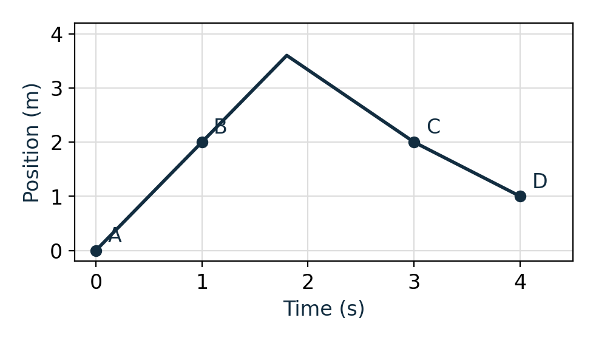
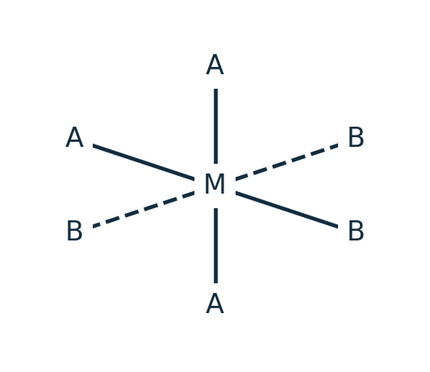
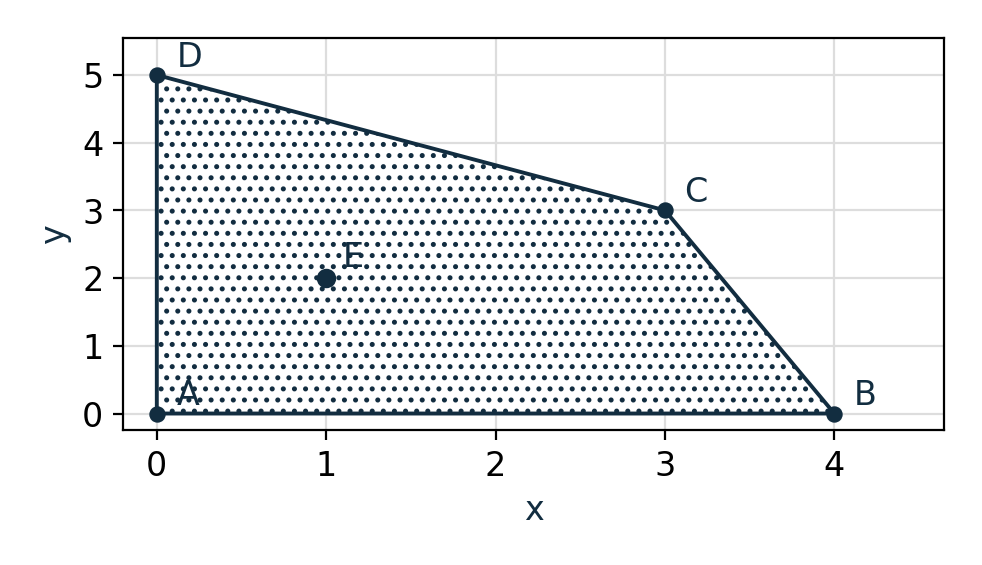
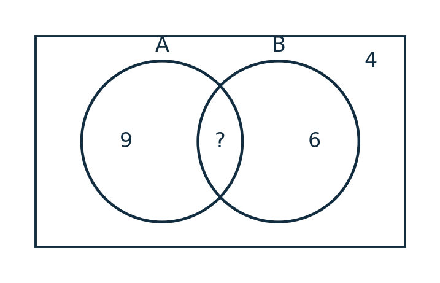

COMEDK UGET Test 8
180 minutes · 180 questions · +1 per correct answer · No negative marking
Physics
Q001. In a band diagram, X has a full valence band separated by a small gap from an empty conduction band. Y has overlapping valence and conduction bands. Which material can conduct at very low temperature without exciting electrons across a gap?
A) X only
B) Both
C) Neither
D) Y only
Worked solution
Answer: (D) Y only
Why and working: Y has accessible empty states near occupied states. X has a full lower band and needs an excitation across its gap to produce mobile carriers.
Why not the others: (A) X is the gapped material. (B) the filled band in X cannot respond as a partially filled one. (C) overlap allows redistribution of electrons.
Q002. A light spring is held vertical with a hanging mass at equilibrium. A second identical spring is placed in parallel and supports the same mass. What is the new static extension relative to the old extension?
A) One half
B) Twice
C) Unchanged
D) One quarter
Worked solution
Answer: (A) One half
Why and working: At equal extension both springs supply kx, so 2kx balances the mass. The original extension was mg/k.
Why not the others: (B) effective stiffness increases. (C) the load is shared. (D) the force balance is linear in extension.
Q003. Three identical positive point charges occupy three corners of a square. In which direction is the net force on the charge diagonally opposite the empty corner?
A) Along the diagonal toward the empty corner
B) Along the diagonal away from the empty corner
C) Along one edge of the square
D) Zero
Worked solution
Answer: (B) Along the diagonal away from the empty corner
Why and working: The two occupied neighbouring corners repel the target along perpendicular edges with equal magnitudes. Their resultant points outward along the diagonal away from the square’s centre and the empty corner.
Why not the others: (A) both charges repel away from their respective occupied corners. (C) the perpendicular components have equal magnitudes. (D) perpendicular nonzero forces do not cancel.
Q004. Two point charges lie on the x-axis. The +q charge is at x=−a and the −q charge at x=+a. A second charge +Q is to be placed to the right of the point x=3a so that the electric potential at x=3a is zero. If its distance from that point is 4a, what is Q?
A) q/2
B) q
C) 2q
D) 4q
Worked solution
Answer: (B) q
Why and working: The dipole’s terms at x=3a are kq/(4a)−kq/(2a)=−kq/(4a). The added potential kQ/(4a) cancels this exactly when Q=q.
Why not the others: (A) provides only half the needed positive potential. (C) overcorrects the original negative potential. (D) the extra charge has the same distance denominator as the remaining negative term.
Q005. Two waves with the same amplitude A and frequency travel in the same direction. Their phase difference is 120°. What is the resultant displacement amplitude?
A) 2A
B) √2 A
C) Zero
D) A
Worked solution
Answer: (D) A
Why and working: The amplitude vectors add to magnitude √(A²+A²+2A² cos120°)=A. The phase difference determines the cross term.
Why not the others: (A) requires zero phase difference. (B) requires a right angle in phase. (C) requires opposition at 180°.
Q006. Two segments of equal length and cross section are connected in series. They have the same mobile carrier density, but segment X has one third the mobility of Y. Which pair gives E_X/E_Y and the ratio of drift speed magnitudes v_X/v_Y?
A) 1 and 3
B) 1/3 and 1
C) 3 and 3
D) 3 and 1
Worked solution
Answer: (D) 3 and 1
Why and working: One series path carries the same current. Equal area and density make drift speeds equal. Since v=μE, the lower mobility in X requires three times its field.
Why not the others: (A) drops the current continuity condition. (B) reverses the mobility ratio. (C) equal currents fix equal drift speeds here.
Q007. A circular current loop is viewed face-on. Its current runs clockwise. What is the magnetic field direction at the centre?
A) Toward the observer along the axis
B) Clockwise in the plane of the loop
C) Zero by symmetry
D) Away from the observer along the axis
Worked solution
Answer: (D) Away from the observer along the axis
Why and working: Curl the right-hand fingers with the current. The thumb points away from the viewer. In-plane contributions cancel, leaving the axial field.
Why not the others: (A) would follow from anticlockwise current. (B) the axial contributions reinforce. (C) only in-plane components cancel.
Q008. A train’s stopping distance is modelled as s=kv²/a, where v is its speed and a is deceleration magnitude. What dimensions must k have?
A) It is dimensionless
B) Length
C) Time
D) Inverse speed
Worked solution
Answer: (A) It is dimensionless
Why and working: The ratio v²/a has dimensions (L²/T²)/(L/T²)=L. The distance requires no residual dimensional factor.
Why not the others: (B) would make the right side an area. (C) would introduce an extra time factor. (D) would leave time dimensions.
Q009. At a far equatorial point of an ideal bar magnet, the local magnetic field points west. Which way does the magnetic dipole moment point?
A) West
B) North
C) Vertically upward
D) East
Worked solution
Answer: (D) East
Why and working: On the equatorial line the dipole field points opposite to the magnetic moment. A westward field therefore means an eastward moment.
Why not the others: (A) on the equatorial line field and moment oppose. (B) local field and moment are collinear. (C) the moment cannot be perpendicular here.
Q010. An isolated conducting coil has a changing external magnetic flux. A break is then made in the coil, while the flux variation continues unchanged. What remains possible?
A) An induced emf exists but steady circulation around the broken circuit does not
B) The emf becomes zero because current vanishes
C) The current becomes infinite at the break
D) The coil carries the same circulating current as before
Worked solution
Answer: (A) An induced emf exists but steady circulation around the broken circuit does not
Why and working: Faraday’s law relates emf to flux change. A conducting path is needed to circulate current, so the break prevents that circulation.
Why not the others: (B) emf can exist without a conducting loop current. (C) an open circuit suppresses current. (D) its conducting path has been interrupted.
Q011. On the position–time chart, which labelled interval has zero average velocity but contains motion?

A) Interval BC
B) Interval AB
C) Interval CD
D) Intervals AB and CD
Worked solution
Answer: (A) Interval BC
Why and working: B and C have the same position, so their average velocity is zero. The curve between those times rises and falls, showing motion.
Why not the others: (B) the endpoints have different positions. (C) the endpoints have different positions. (D) both intervals have nonzero endpoint changes.
Q012. In a series circuit, resistance is 6 Ω and net reactance has magnitude 8 Ω. At 20 V rms, what is current magnitude?
A) 20/14 A
B) 20/6 A
C) 2 A
D) 2.5 A
Worked solution
Answer: (C) 2 A
Why and working: The resistive and reactive phasors are perpendicular. Thus Z=√(6²+8²)=10 Ω, and I=20/10=2 A.
Why not the others: (A) adds phasor magnitudes directly. (B) ignores reactance. (D) uses the reactance alone.
Q013. A plane transverse wave moves along +x. Two neighbouring particles on the string move momentarily in opposite vertical directions. Which statement is consistent with one propagating wave?
A) Different phases along the string permit opposite velocities while the wave propagates in one direction
B) The wave must propagate −x between those particles
C) The string displacements must be longitudinal
D) Opposite velocities prevent energy transport
Worked solution
Answer: (A) Different phases along the string permit opposite velocities while the wave propagates in one direction
Why and working: Particle velocity describes local oscillation, whereas the phase propagates. Points at phases on opposite sides of a displacement extremum can have opposite vertical velocities.
Why not the others: (B) local vertical velocity does not set propagation direction. (C) vertical motion is perpendicular to +x. (D) a transverse wave can transport energy.
Q014. A walker’s displacement u and a second displacement v satisfy u+v=(1,7) m and u−v=(5,−1) m. What is the magnitude of u?
A) 3√2 m
B) 5 m
C) √52 m
D) 6√2 m
Worked solution
Answer: (A) 3√2 m
Why and working: Adding gives 2u=(6,6) m, hence u=(3,3) m. Its length is √(9+9)=3√2 m.
Why not the others: (B) does not use both solved components. (C) uses other coordinate differences. (D) this is the length of 2u.
Q015. Which ray can undergo total internal reflection at the named interface?
A) A ray moving from index 1.2 into index 1.6 with sin incidence 0.80
B) A ray moving from index 1.6 into index 1.2 with sin incidence 0.70
C) A ray at normal incidence from index 1.6 into index 1.2
D) A ray moving from index 1.6 into index 1.2 with sin incidence 0.80
Worked solution
Answer: (D) A ray moving from index 1.6 into index 1.2 with sin incidence 0.80
Why and working: The critical sine for 1.6 to 1.2 is 0.75. The first ray travels toward lower index with incidence above this threshold.
Why not the others: (A) the direction is toward higher index. (B) 0.70 lies below threshold. (C) normal incidence has sine zero.
Q016. A plane optical wavefront crosses into a slower medium at normal incidence. How are the new plane wavefront and its spacing changed?
A) It tilts while its spacing stays fixed
B) It stays parallel and spacing grows
C) It becomes circular at the boundary
D) It stays parallel to the interface and adjacent fronts are closer
Worked solution
Answer: (D) It stays parallel to the interface and adjacent fronts are closer
Why and working: All points along the plane front encounter the boundary together, so no tilt is produced. Frequency stays fixed and λ=v/f decreases.
Why not the others: (A) oblique arrival is required for tilt. (B) the smaller speed lowers spacing. (C) a uniform planar interface preserves symmetry here.
Q017. A horse pulls a cart forward. What is the partner force to the horse’s forward force on the cart?
A) The ground’s forward force on the horse
B) The cart’s backward pull on the horse
C) The cart’s downward weight
D) The horse’s forward force on the ground
Worked solution
Answer: (B) The cart’s backward pull on the horse
Why and working: The two forces of the interaction act on different bodies with equal magnitudes and opposite directions. The cart pulls the horse back.
Why not the others: (A) this is a separate contact interaction. (C) weight is Earth’s force on the cart. (D) this concerns a different pair.
Q018. Light of photon energy 5 eV gives a maximum electron kinetic energy of 2 eV from a metal. What photon energy would produce a maximum kinetic energy of 4 eV?
A) 6 eV
B) 7 eV
C) 8 eV
D) 4 eV
Worked solution
Answer: (B) 7 eV
Why and working: The work function is 5−2=3 eV. To leave 4 eV for motion requires 3+4=7 eV.
Why not the others: (A) uses the initial kinetic energy as the work function or adds too little. (C) would give 5 eV kinetic energy. (D) does not allow for work function.
Q019. Which transition increases the Bohr radius by more: n=3 to n=4, or n=1 to n=3?
A) n=3 to n=4
B) Both changes are equal
C) Each change decreases the radius
D) n=1 to n=3
Worked solution
Answer: (D) n=1 to n=3
Why and working: The increases are 7a₀ and 8a₀ respectively, so the larger increase is from n=1 to n=3.
Why not the others: (A) the smaller increase is 7a₀. (B) 8a₀ and 7a₀ differ. (C) larger n increases radius.
Q020. A spring is compressed by x and stores 9 J. Relaxing it to compression x/3 releases how much energy?
A) 1 J
B) 3 J
C) 8 J
D) 6 J
Worked solution
Answer: (C) 8 J
Why and working: The remaining energy is 9/9=1 J because U is quadratic in compression. The release is 9−1=8 J.
Why not the others: (A) this is the remaining energy. (B) uses linear scaling. (D) does not apply squared compression.
Q021. In a nuclear reaction, products have total rest mass 0.002 u larger than reactants. Use 1 u c²=931 MeV. What is the mass-energy balance?
A) About 1.86 MeV is released
B) About 1.86 MeV must be supplied
C) About 466 MeV must be supplied
D) No energy change follows from a mass increase
Worked solution
Answer: (B) About 1.86 MeV must be supplied
Why and working: The larger final rest mass needs 0.002×931=1.862 MeV from other forms of energy.
Why not the others: (A) energy is required to increase rest mass. (C) multiply, rather than divide by the given mass fraction. (D) the mass change fixes the rest-energy change.
Q022. Two regions of doped silicon form a junction. The left region has excess electrons as mobile majority carriers and the right has excess holes. Which fixed ions are exposed near the interface after diffusion?
A) Negative donors on the left and positive acceptors on the right
B) Positive ions on both sides
C) Positive donors on the left and negative acceptors on the right
D) No fixed ions, because all dopants cross the interface
Worked solution
Answer: (C) Positive donors on the left and negative acceptors on the right
Why and working: Removing electrons leaves ionised positive donors on the n side. Removing holes leaves ionised negative acceptors on the p side. Dopant sites remain in the lattice.
Why not the others: (A) the donor and acceptor signs are inverted. (B) the two sides expose opposite fixed charge. (D) diffusion concerns mobile carriers.
Q023. An isolated turntable’s kinetic energy rises when a rider moves inward. Its initial inertia is I and angular speed ω. When its inertia becomes I/3, what is the ratio of final to initial rotational kinetic energy?
A) 1/3
B) 9
C) 1
D) 3
Worked solution
Answer: (D) 3
Why and working: Angular momentum Iω is conserved, so the speed triples. Then K′/K=(1/3)×3²=3. Internal work can supply the energy increase.
Why not the others: (A) assumes speed stays fixed. (B) ignores the inertia change. (C) conserved angular momentum does not imply conserved kinetic energy.
Q024. A uniform circular ring carries linear charge density λ. What charge lies on an arc of angle π/3 radians in a ring of radius R?
A) λπR/3
B) λR/3
C) λπR²/3
D) 2πλR
Worked solution
Answer: (A) λπR/3
Why and working: Charge is density times arc length. The arc length is Rθ=πR/3.
Why not the others: (B) omits π. (C) uses an area-like power of radius. (D) counts the full circumference.
Q025. Two equipotential surfaces are labelled 10 V and 6 V. A charge +q is moved from one point to another on the 10 V surface, then to the 6 V surface. What is work done by the electric field in each leg?
A) Zero, then −4q
B) Zero, then +4q
C) +10q, then +6q
D) +4q, then zero
Worked solution
Answer: (B) Zero, then +4q
Why and working: The field’s work is q(V_start−V_end). First the potentials coincide. The second leg descends by 4 V and gives positive work.
Why not the others: (A) uses the potential-energy change sign. (C) absolute potentials do not set work. (D) the order of the potential changes is reversed.
Q026. In a uniform-density Earth model, where is gravity greater, at R/4 from the centre or at depth R/4 below the surface?
A) At R/4 from the centre, by a factor of three
B) Equal because both distances are R/4
C) At depth R/4, by a factor of three
D) At depth R/4, by a factor of nine
Worked solution
Answer: (C) At depth R/4, by a factor of three
Why and working: Interior gravity is proportional to centre distance. A depth of R/4 corresponds to r=3R/4, three times the first radius.
Why not the others: (A) reverses the centre distances. (B) depth and centre distance are distinct. (D) the interior rule is linear.
Q027. A current is plotted on the horizontal axis and voltage on the vertical axis. A sample gives a straight line through the origin. If the slope doubles in a new sample, what changes?
A) Its conductance doubles
B) Its resistance halves
C) Its current doubles at any fixed voltage
D) Its resistance doubles
Worked solution
Answer: (D) Its resistance doubles
Why and working: On a V-versus-I graph, the slope equals V/I=R. At fixed V a greater R gives smaller current.
Why not the others: (A) conductance is the inverse slope. (B) would be true if the axes were reversed and plotted slope doubled. (C) at fixed voltage current falls.
Q028. Two concentric Ampèrian circles around the same long wire have radii r and 3r. Which statement holds about the field magnitude and line integral?
A) Both are one third as large
B) The field stays fixed and the integral triples
C) Both stay fixed
D) The field at 3r is one third as large, but the integral is unchanged
Worked solution
Answer: (D) The field at 3r is one third as large, but the integral is unchanged
Why and working: The enclosed current is fixed, making B·2πr constant. The wider path has smaller local B by the radius ratio.
Why not the others: (A) the same current fixes both integrals. (B) the field weakens with radius. (C) the integral is fixed, not the field.
Q029. A stretched cylindrical wire has a positive Poisson ratio. Ignoring end effects, what can be inferred about material at the outer surface as the wire gets longer?
A) Its diameter decreases
B) Its diameter increases
C) Its diameter stays fixed for every material with positive Poisson ratio
D) Its diameter becomes negative
Worked solution
Answer: (A) Its diameter decreases
Why and working: Positive Poisson ratio means transverse strain and longitudinal strain have opposite signs. An axial extension has positive strain, so the diameter contracts.
Why not the others: (B) that would be positive transverse strain. (C) positive Poisson ratio gives a nonzero contraction for nonzero axial strain. (D) strain is fractional and a small contraction cannot reverse a size.
Q030. A freely turning bar magnet is initially exactly perpendicular to a uniform magnetic field. Which immediate pair describes the net force and the torque?
A) Nonzero net force and zero torque
B) Both zero
C) Both nonzero
D) Zero net force and nonzero torque
Worked solution
Answer: (D) Zero net force and nonzero torque
Why and working: Opposite ends experience opposing forces in a uniform field. They can give a couple, and the torque is largest at 90°.
Why not the others: (A) exchanges the effects. (B) only the translational force vanishes. (C) the uniform field does not yield net translation.
Q031. A magnet’s north pole approaches a closed circular loop and then begins moving away on the same side. Viewed from the magnet, how does the induced conventional current change while it is in motion?
A) Clockwise on approach, anticlockwise on recession
B) Anticlockwise on approach, clockwise on recession
C) Anticlockwise in both phases
D) Clockwise in both phases
Worked solution
Answer: (B) Anticlockwise on approach, clockwise on recession
Why and working: Approach increases flux into the loop from the observer’s side, so the near face becomes north by anticlockwise current. Recession reduces that flux, so the induced field reverses and the near face becomes south.
Why not the others: (A) would aid both changes. (C) recession reverses the flux derivative. (D) approach requires the opposite sense.
Q032. A light sphere is released well below the surface of a viscous liquid denser than the sphere. Which force opposes its eventual upward motion at terminal speed?
A) Buoyancy points downward
B) Viscous drag points downward
C) Weight points upward
D) Viscous drag points upward
Worked solution
Answer: (B) Viscous drag points downward
Why and working: The light sphere rises because buoyancy exceeds weight at rest. At upward terminal speed drag opposes its motion and balances the otherwise upward net force.
Why not the others: (A) buoyancy remains upward. (C) gravity points downward. (D) drag opposes motion through the stationary liquid.
Q033. In a series LCR circuit, the capacitor voltage phasor is larger than the inductor voltage phasor at a certain frequency. Does current lead or lag the supply voltage?
A) Current leads
B) Current lags
C) They are in phase
D) Their relative phase must be 180°
Worked solution
Answer: (A) Current leads
Why and working: The larger capacitive term makes net reactive voltage lag current. Adding the resistor component leaves the supply voltage behind the current.
Why not the others: (B) lag is the inductive case. (C) the reactive contributions do not cancel. (D) a positive resistance keeps the phase difference within 90°.
Q034. Which radiation has a shorter vacuum wavelength than visible violet light and is used in ordinary radiography of bones?
A) Microwaves
B) Infrared
C) Long-wave radio
D) X rays
Worked solution
Answer: (D) X rays
Why and working: X rays occupy higher frequency and shorter wavelength than visible light and can give contrast through different absorption in tissues and bone.
Why not the others: (A) microwaves have much longer wavelength. (B) infrared lies beyond the red end. (C) long-wave radio has still longer wavelength.
Q035. A body at 80 °C with heat capacity 100 J/K touches another insulated body initially at 20 °C. Their final common temperature is 40 °C. What is the second body’s heat capacity?
A) 50 J/K
B) 100 J/K
C) 200 J/K
D) 300 J/K
Worked solution
Answer: (C) 200 J/K
Why and working: The hot body loses 100×40=4000 J while the other gains heat over a 20 K rise. Divide 4000 by 20.
Why not the others: (A) inverts the relative temperature changes. (B) equal capacities would give 50 °C. (D) would require a different final temperature.
Q036. An optical fibre has an intact low-index cladding. If the core index is reduced until it equals the cladding index, what happens to ordinary total-internal-reflection guiding?
A) It becomes possible for all incident angles
B) It improves because the critical angle becomes 0°
C) It ceases at that boundary
D) It is unchanged if the fibre remains straight
Worked solution
Answer: (C) It ceases at that boundary
Why and working: Without an index drop, light entering the surrounding medium at the interface is not totally internally reflected. The critical sine approaches one as the indices approach equality.
Why not the others: (A) equal indices remove the boundary contrast. (B) the critical sine tends to one, not zero. (D) the material contrast matters even in a straight fibre.
Q037. Two coherent sources give equal intensities. One path is extended by exactly λ/2 without changing amplitudes. What happens at a point that was initially bright at zero relative phase?
A) It becomes dark due to an added phase π
B) It stays bright because source frequency is fixed
C) Its phase increases by 2π and it remains bright
D) Its intensity becomes exactly one source’s intensity
Worked solution
Answer: (A) It becomes dark due to an added phase π
Why and working: The added phase is 2π(λ/2)/λ=π. Equal field amplitudes then cancel at the observation point.
Why not the others: (B) frequency does not fix the path phase. (C) one full wavelength would yield 2π. (D) equal opposition gives complete cancellation.
Q038. Two reservoirs are at different temperatures. A refrigerator moves heat from the colder one to the hotter one. Which addition makes this consistent with the second law?
A) The cold reservoir must supply all the work while also losing heat at no other cost
B) The heat can flow uphill spontaneously if the device completes a cycle
C) The working substance must never interact with either reservoir
D) Net work must be supplied to the refrigerator
Worked solution
Answer: (D) Net work must be supplied to the refrigerator
Why and working: The Clausius statement forbids cold-to-hot transfer as the sole result of a cycle. Supplying work allows a refrigerator to perform that transfer.
Why not the others: (A) there must be an external effect such as work input. (B) a completed cycle alone does not permit spontaneous uphill flow. (C) the device takes and rejects heat at its reservoirs.
Q039. At identical photon arrival rates, beam X has photon frequency twice beam Y’s. Both beams hit perfectly absorbing surfaces normally. Compare the energy-delivery rates and the magnitudes of radiation force X:Y.
A) Power ratio two and force ratio one
B) Both ratios are two
C) Both ratios are one half
D) Power ratio one and force ratio two
Worked solution
Answer: (B) Both ratios are two
Why and working: Each photon carries hf and momentum hf/c. Multiplication by the same arrival rate doubles both power and force for the higher-frequency beam.
Why not the others: (A) momentum per photon also doubles. (C) the higher frequency increases both quantities. (D) power per photon depends on frequency as well.
Q040. In the Bohr model a hydrogen electron goes from n=2 to n=1. By which factors do its speed and the magnitude of its total energy change?
A) 2 and 4
B) 4 and 2
C) 1/2 and 1/4
D) 2 and 2
Worked solution
Answer: (A) 2 and 4
Why and working: Bohr speed scales as 1/n, while magnitude of energy scales as 1/n². Halving n therefore doubles speed and quadruples the energy magnitude.
Why not the others: (B) reverses the two scalings. (C) uses the opposite direction of transition. (D) misses the squared dependence.
Q041. Ignoring molecular vibration, how many translational degrees of freedom does a diatomic molecule have in a gas in three-dimensional space?
A) 2
B) 3
C) 5
D) 6
Worked solution
Answer: (B) 3
Why and working: Centre-of-mass translation is independent along x, y and z. Rotational degrees are counted separately.
Why not the others: (A) two counts rotational degrees for a rigid diatomic. (C) five includes rotations. (D) translation does not require tracking each atom independently.
Q042. Two nuclear product sets contain the same total numbers of protons and neutrons. Their average binding energies are 8.3 and 8.6 MeV per nucleon. Which set has the smaller total rest mass?
A) The 8.6 MeV per nucleon set
B) The 8.3 MeV per nucleon set
C) They must have equal masses because nucleon number agrees
D) Both exceed the rest mass of all separated nucleons
Worked solution
Answer: (A) The 8.6 MeV per nucleon set
Why and working: For the same constituent proton and neutron inventory, greater binding subtracts more from the separated rest energy. The higher average binding therefore means lower total rest mass.
Why not the others: (B) less binding subtracts less mass. (C) equal nucleon count alone does not preserve binding. (D) bound states lie below separated rest energy.
Q043. A p–n diode is in forward bias. Which terminal connection lowers its depletion barrier?
A) Positive on p and negative on n
B) Negative on p and positive on n
C) Both ends on the positive terminal at equal potential
D) Positive only on the n region with the p side isolated
Worked solution
Answer: (A) Positive on p and negative on n
Why and working: The forward connection opposes the internal junction field, lowering the barrier and allowing majority carriers across.
Why not the others: (B) this strengthens the barrier. (C) equal potentials give no applied bias. (D) no defined forward potential difference is imposed.
Q044. At an SHM turning point x=A, which energy changes immediately after the mass begins moving inward, ignoring damping?
A) Both decrease
B) Kinetic decreases and potential increases
C) Potential decreases and kinetic increases
D) Neither changes until x reaches zero
Worked solution
Answer: (C) Potential decreases and kinetic increases
Why and working: Elastic energy is proportional to x² and falls as the mass moves inward. Total mechanical energy is fixed, so kinetic energy rises.
Why not the others: (A) the total stays constant. (B) describes motion toward a turning point. (D) energy exchange occurs throughout the inward path.
Q045. A field line drawn through a point heads downward. A negative test charge is initially at rest there. Which way is its initial acceleration?
A) Downward
B) Along the field line only if released twice
C) Upward
D) Zero because the initial speed is zero
Worked solution
Answer: (C) Upward
Why and working: The force is qE. Since q is negative it points opposite the local field tangent.
Why not the others: (A) would apply to a positive charge. (B) release count is irrelevant. (D) electrostatic force does not depend on initial velocity.
Q046. Two opposite charges +q and −q are separated from infinity to distance a quasistatically. What is work done by the external agent during this approach?
A) +kq²/a
B) −kq²/a
C) Zero
D) −2kq²/a
Worked solution
Answer: (B) −kq²/a
Why and working: Their interaction energy changes from zero to −kq²/a. Quasistatic work by the external agent equals that change since kinetic energy is unchanged.
Why not the others: (A) this is the positive work by the attracting field. (C) the interaction energy changes. (D) there is one charge pair.
Q047. A stationary plane mirror is rotated 10° while the incident ray remains fixed. What is the angular change in reflected direction in the plane of incidence?
A) 10°
B) 20°
C) 5°
D) 40°
Worked solution
Answer: (B) 20°
Why and working: The mirror normal rotates 10°. Equal angle of incidence and reflection on opposite sides of the normal makes the reflected direction change twice as much.
Why not the others: (A) counts only the normal’s rotation. (C) incorrectly halves the mirror rotation. (D) uses the doubling twice.
Q048. Two 60 W lamps are rated at 120 V and are modelled as fixed resistances. They are connected in series across 120 V. What total power is drawn?
A) 60 W
B) 120 W
C) 30 W
D) 15 W
Worked solution
Answer: (C) 30 W
Why and working: Each rated resistance is 120²/60=240 Ω. Series resistance is 480 Ω, so total power is 120²/480=30 W.
Why not the others: (A) uses one lamp’s rated power. (B) assumes both receive the full supply. (D) this is the power of one series lamp.
Q049. A long solenoid produces an axial field through a small compass. Its current is switched off and nearby fields are negligible. What happens to the magnetic torque on that compass due to the solenoid?
A) It reverses at unchanged magnitude
B) It drops to zero
C) It remains unchanged
D) It becomes radial and larger
Worked solution
Answer: (B) It drops to zero
Why and working: The solenoid field is generated by current. With current zero its steady field and associated torque vanish.
Why not the others: (A) turning off an ideal source is different from reversing it. (C) no steady field remains from the winding current. (D) zero field gives no torque direction.
Q050. A velocity–time graph has a horizontal segment at +3 m/s. What does the segment’s slope tell you?
A) Acceleration is +3 m/s²
B) Acceleration is zero
C) Displacement is necessarily zero
D) The object is at rest
Worked solution
Answer: (B) Acceleration is zero
Why and working: Slope of velocity against time is acceleration. A horizontal line yields zero slope while the velocity remains positive.
Why not the others: (A) 3 m/s is a velocity. (C) nonzero velocity produces displacement. (D) the speed is 3 m/s.
Q051. Field-line drawings X and Y use the same number of lines per unit flux. Near two indicated external points, the lines have the same arrow direction but the spacing is tighter in X. What conclusion follows locally?
A) Fields point opposite ways at those points
B) Fields point the same way and X is stronger
C) Fields have equal magnitudes because their arrows agree
D) Y is stronger because its lines are farther apart
Worked solution
Answer: (B) Fields point the same way and X is stronger
Why and working: The arrows set the local tangent direction. With a common drawing convention, greater line density means greater local field magnitude.
Why not the others: (A) both local arrow directions agree. (C) arrows do not encode magnitude alone. (D) wider spacing represents a weaker field.
Q052. During a current ramp the induced emf of a fixed inductor is negative in the chosen positive current direction. Provided L>0, what can be inferred?
A) The current is decreasing in that signed direction
B) The current must be zero
C) The current is increasing in that signed direction
D) The inductance must be negative
Worked solution
Answer: (C) The current is increasing in that signed direction
Why and working: The self-induced emf is −L dI/dt. A negative value means dI/dt>0.
Why not the others: (A) would yield positive induced emf. (B) the derivative does not fix the value. (D) the premise fixes positive L.
Q053. A unit vector in the direction of −2i+2j is which of these?
A) (−i+j)/2
B) (i−j)/√2
C) (−i+j)/√2
D) −i+j
Worked solution
Answer: (C) (−i+j)/√2
Why and working: The magnitude of the original is √8=2√2. Dividing each component by that positive magnitude gives the unit vector.
Why not the others: (A) its norm is 1/√2. (B) this is antiparallel. (D) has norm √2.
Q054. A series LCR circuit is at resonance. The capacitance is quadrupled, with L unchanged. Which new resonance angular frequency follows?
A) Half its original value
B) One quarter its original value
C) Twice its original value
D) Unchanged
Worked solution
Answer: (A) Half its original value
Why and working: At resonance ω=1/√(LC). Four times C doubles the denominator.
Why not the others: (B) misses the square root. (C) inverts the change. (D) resonance depends on C.
Q055. A point is 6 cm below a plane glass–air interface, in glass of refractive index 1.5. A paraxial observer in air views it from above. What apparent depth follows from the spherical-refraction relation in the infinite-radius limit?
A) 6 cm
B) 9 cm
C) 4 cm
D) 3 cm
Worked solution
Answer: (C) 4 cm
Why and working: Use n₂/v−n₁/u=0 for an infinite radius with n₁=1.5 and n₂=1. For u=−6 cm, v=u/1.5=−4 cm, a virtual image 4 cm below the surface.
Why not the others: (A) ignores the refractive-index ratio. (B) reverses that ratio. (D) the divisor is 1.5 rather than two.
Q056. A 1 kg moving trolley at 6 m/s catches a 2 kg trolley moving in the same direction at 1 m/s. They lock. What is their common speed?
A) 7/3 m/s
B) 3.5 m/s
C) 8/3 m/s
D) 8 m/s
Worked solution
Answer: (C) 8/3 m/s
Why and working: Initial momentum is 1×6+2×1=8 kg·m/s. Sticking gives total mass 3 kg, so v=8/3 m/s.
Why not the others: (A) forgets to weight the slower trolley by its mass. (B) takes an unweighted speed mean. (D) omits division by total mass.
Q057. The entire YDSE apparatus is immersed in liquid of refractive index 4/3. Then the slit separation is reduced by half with screen distance fixed. What is the fringe width relative to the original in air?
A) 2/3
B) 3/8
C) 2
D) 3/2
Worked solution
Answer: (D) 3/2
Why and working: Wavelength becomes 3/4 of its value in air at fixed frequency. Since β=λD/d, halving d multiplies by two, giving 3/2.
Why not the others: (A) inverts the combined scaling. (B) multiplies by the separation factor instead of dividing. (C) ignores the wavelength reduction.
Q058. For a particle’s de Broglie wave, which listed expression has units of wavelength?
A) hp
B) p/h
C) h/p
D) hc/p
Worked solution
Answer: (C) h/p
Why and working: Action divided by momentum has units (kg·m²/s)/(kg·m/s)=m.
Why not the others: (A) the units multiply rather than divide. (B) this has units of inverse length. (D) the extra speed factor changes the units.
Q059. Two different paths connect a hilltop and its base. Ignoring other forces, which statement about the work of gravity is true?
A) It is the same on both because it depends only on the height drop
B) It is larger along the longer path
C) It is zero along a winding path
D) It depends on the speed in each section
Worked solution
Answer: (A) It is the same on both because it depends only on the height drop
Why and working: Gravity is conservative in a fixed field. Its work is minus the change of gravitational potential energy, independent of path.
Why not the others: (B) distance along the path need not determine vertical drop. (C) the endpoints have different heights. (D) speed is not an input to gravitational work at fixed endpoints.
Q060. Hydrogen emits two lines from n=4, one to n=2 and the other to n=3. Which has the shorter wavelength?
A) 4 to 3
B) Their wavelengths agree
C) 4 to 2
D) Neither has a finite wavelength
Worked solution
Answer: (C) 4 to 2
Why and working: The n=2 level is lower than n=3. From the same initial level, the larger energy drop gives a greater photon frequency and shorter wavelength.
Why not the others: (A) its energy gap is smaller. (B) the final levels differ. (D) each gap is positive and finite.
Chemistry
Q061. An ideal solution has a nonvolatile solute. The pure solvent has pressure 80 kPa and the solution has pressure 76 kPa. What is the mole ratio solute:solvent?
A) 1:20
B) 1:19
C) 19:1
D) 1:16
Worked solution
Answer: (B) 1:19
Why and working: Raoult’s law gives x_solute=(80−76)/80=1/20 and x_solvent=19/20. Dividing the fractions gives 1:19.
Why not the others: (A) a mole fraction is not the solute-to-solvent ratio. (C) reverses the components. (D) the pressure lowering is 4 against solvent partial pressure 76, giving 4:76.
Q062. Which change converts atomisation enthalpy of gaseous Cl₂ to the atomisation enthalpy per mole of Cl atoms formed?
A) Divide the Cl–Cl bond dissociation enthalpy by two
B) Multiply it by two
C) Reverse its sign with no scaling
D) Add the formation enthalpy of Cl₂ gas
Worked solution
Answer: (A) Divide the Cl–Cl bond dissociation enthalpy by two
Why and working: Breaking a mole of Cl₂ molecules produces two moles of atoms. Per mole of Cl atoms the energy is half the bond dissociation value.
Why not the others: (B) this gives twice the energy for one mole of bonds. (C) atomisation requires dissociating the bond. (D) no formation-enthalpy term is needed for the gas named.
Q063. At high dilution, what happens to molar conductivity and ordinary conductivity of a strong electrolyte as concentration falls toward zero?
A) Molar conductivity rises toward a finite limit, while ordinary conductivity falls toward zero
B) Both rise without bound
C) Both approach the same nonzero number in identical units
D) Molar conductivity falls toward zero while ordinary conductivity rises
Worked solution
Answer: (A) Molar conductivity rises toward a finite limit, while ordinary conductivity falls toward zero
Why and working: Fewer ions per volume reduce κ. However, weaker interionic interactions make the conductivity per mole approach the finite independent-ion sum.
Why not the others: (B) ordinary conductivity declines with fewer charge carriers per volume. (C) the two quantities have different units and limiting behaviour. (D) the trends are reversed.
Q064. Two first-order reactions have half-lives 10 and 20 min respectively. Sample X starts at 0.80 M with the shorter half-life, and Y starts at 0.40 M. When are their concentrations equal?
A) 10 min
B) 20 min
C) 40 min
D) Never
Worked solution
Answer: (B) 20 min
Why and working: At t=20 min X has halved twice to 0.20 M. Y has halved once to the same value. The ratio decreases monotonically because X’s rate constant is larger.
Why not the others: (A) X is at 0.40 M while Y is at about 0.28 M. (C) then X has already become smaller. (D) the initial concentration advantage is overcome.
Q065. A buffer contains 0.30 mol acetic acid and 0.20 mol acetate. Ignoring volume change, 0.05 mol strong base reacts completely. What is pH relative to pK_a afterward?
A) It equals pK_a
B) It is 0.18 below pK_a
C) It is 0.30 above pK_a
D) It equals 7 regardless of pK_a
Worked solution
Answer: (A) It equals pK_a
Why and working: The added OH⁻ converts 0.05 mol acid into acetate. Both then have 0.25 mol, so log([A⁻]/[HA])=0.
Why not the others: (B) uses the initial base-to-acid ratio. (C) the resulting ratio is one. (D) equality to pK_a need not mean neutrality.
Q066. In a typical transition-metal interstitial solid, where do the small atoms sit?
A) Only in place of every metal atom
B) In gaps between metal lattice sites
C) Only outside the crystal surface
D) At the nuclei of host atoms
Worked solution
Answer: (B) In gaps between metal lattice sites
Why and working: An interstitial site is a void within the host lattice. Small atoms can occupy these voids without replacing the host atoms.
Why not the others: (A) replacement is substitutional. (C) interstitial sites are internal. (D) the two nuclei remain distinct.
Q067. Which set of orbitals is higher in an octahedral crystal field because its lobes point toward the six ligands?
A) d_xy, d_xz and d_yz
B) All five have the same energy
C) d_(x²−y²) and d_(z²)
D) Only d_xy
Worked solution
Answer: (C) d_(x²−y²) and d_(z²)
Why and working: The ligands lie along the coordinate axes. The two e_g orbitals point at these axes and interact more strongly.
Why not the others: (A) their lobes lie mainly between axes. (B) the directional field splits the energies. (D) d_xy lies between the x and y axes.
Q068. When A–B cleaves such that both bonding electrons go to B, what products form starting from neutral fragments formally joined by that bond?
A) A⁺ and B⁻
B) A radical and B radical
C) A⁻ and B⁺
D) Two neutral closed-shell fragments
Worked solution
Answer: (A) A⁺ and B⁻
Why and working: Heterolytic cleavage transfers the whole pair to B. Relative to splitting the pair equally, B gains one electron and A loses one.
Why not the others: (B) one electron each would be homolysis. (C) this reverses pair ownership. (D) charges balance but are not individually zero.
Q069. A student claims that any electrophilic substitution of chlorobenzene must replace chlorine. How would you correct the claim for ordinary ring nitration?
A) The nitro group can occupy only the carbon already bonded to Cl
B) Nitration gives only products with no benzene ring
C) It mainly replaces ring H at an ortho or para position while retaining Cl
D) It swaps Cl for a proton and never adds nitro
Worked solution
Answer: (C) It mainly replaces ring H at an ortho or para position while retaining Cl
Why and working: Ordinary electrophilic aromatic substitution restores the ring by losing H⁺ at the attack site. Chlorine stays on the ring and directs substitution chiefly ortho or para.
Why not the others: (A) ordinary nitration is substitution of H. (B) the ring rearomatises. (D) the incoming nitro group stays attached.
Q070. Why is methanol unsuitable as a substitute for ethanol in a drink?
A) Methanol is an inert carbohydrate
B) Methanol metabolism can produce toxic formate
C) Methanol becomes ordinary lye when dissolved
D) Ethanol and methanol have identical biological effects at all doses
Worked solution
Answer: (B) Methanol metabolism can produce toxic formate
Why and working: Methanol metabolism produces formaldehyde and formate. This distinguishes its toxicity profile even though both substances are alcohols.
Why not the others: (A) methanol is a simple alcohol. (C) it does not become an alkali on mixing. (D) the two compounds are metabolised into different products.
Q071. Adding HBr to propene without peroxides chiefly gives which product, and why?
A) 1-bromopropane, via a secondary carbocation
B) 2-bromopropane, via a secondary carbocation
C) 2-bromopropane, via a primary carbocation
D) Propane, by a simple reduction
Worked solution
Answer: (B) 2-bromopropane, via a secondary carbocation
Why and working: Proton addition at the terminal carbon places positive charge on the middle carbon. Bromide attacks that more stable secondary site.
Why not the others: (A) the secondary cation gives attachment at C2. (C) protonation giving a primary cation is less favoured. (D) addition retains bromine in the product.
Q072. For ethanal, which carbon–hydrogen bond is broken when a small amount of base first creates the nucleophile in a self-aldol reaction?
A) The aldehydic C–H bond on the carbonyl carbon
B) An O–H bond already present in ethanal
C) A C–H bond on the methyl group next to CHO
D) A C–H bond on a carbon that is added from the base
Worked solution
Answer: (C) A C–H bond on the methyl group next to CHO
Why and working: Deprotonation at the methyl α-carbon gives the resonance-stabilised enolate. Its negative charge can be represented on carbon or oxygen.
Why not the others: (A) the aldehydic proton is not an α-proton. (B) ethanal has no initial hydroxyl group. (D) base removes a proton rather than adding a carbon.
Q073. A benzenediazonium salt is transformed into a phenol by aqueous hydrolysis. What leaves the aryl group, and what is added at that position?
A) N₂ leaves, and OH replaces the diazonium group
B) NH₃ leaves, and Cl replaces the group
C) H₂ leaves, and H replaces the group
D) NO₂ leaves, and a second benzene ring replaces the group
Worked solution
Answer: (A) N₂ leaves, and OH replaces the diazonium group
Why and working: The diazonium group can be displaced with loss of stable dinitrogen. Water supplies the oxygen of the final phenolic OH.
Why not the others: (B) this changes the leaving species and product. (C) hydrolysis installs OH. (D) the diazonium group is not nitro.
Q074. Completely reacting 5 mol H₂ with 2 mol O₂ by 2H₂+O₂→2H₂O leaves how many moles of water and unreacted H₂?
A) 4 mol water and 1 mol H₂
B) 5 mol water and no H₂
C) 2 mol water and 3 mol H₂
D) 4 mol water and 2 mol H₂
Worked solution
Answer: (A) 4 mol water and 1 mol H₂
Why and working: Each mole of O₂ consumes two moles of H₂ and produces two moles of H₂O. The 2 mol O₂ consume 4 mol H₂, leaving 1 mol.
Why not the others: (B) there is insufficient O₂ for all 5 mol H₂. (C) confuses oxygen molecules with water molecules. (D) subtracts only 3 mol H₂.
Q075. Which carbohydrate has a structural role in plant cell walls?
A) Glucose circulating as free monomer
B) Cellulose
C) Glycogen
D) Sucrose as a free disaccharide
Worked solution
Answer: (B) Cellulose
Why and working: Cellulose forms extended chains that pack together into strong fibres in plant cell walls.
Why not the others: (A) free glucose does not form those fibres. (C) glycogen is a storage polymer. (D) sucrose is often transported rather than used as a wall fibre.
Q076. Two ideal solutions in the same solvent have equal effective particle molality. What follows about their freezing-point depressions and boiling-point elevations?
A) Only freezing-point depressions are equal
B) Only boiling-point elevations are equal
C) The two shifts must equal each other numerically within each solution
D) Both corresponding temperature shifts are equal
Worked solution
Answer: (D) Both corresponding temperature shifts are equal
Why and working: For the same solvent, ΔT_f=K_f im and ΔT_b=K_b im. Equal im fixes both corresponding shifts, while K_f and K_b may differ.
Why not the others: (A) boiling elevation also uses im. (B) freezing depression also uses im. (C) the two solvent constants need not match.
Q077. For an orbital with n=4 and l=2, what allowed count follows for distinct values of m_l?
A) 3
B) 4
C) 7
D) 5
Worked solution
Answer: (D) 5
Why and working: The label l=2 sets magnetic projections −2,−1,0,+1,+2. The count is 2l+1=5.
Why not the others: (A) this corresponds to l=1. (B) n alone does not give the number of projections for a subshell. (C) this corresponds to l=3.
Q078. The same charge is passed through Ag⁺ and Cu²⁺ solutions separately with full current efficiency. With molar masses 108 and 64 g/mol, what is the ratio of silver to copper mass deposited?
A) 27:16
B) 27:8
C) 8:27
D) 2:1
Worked solution
Answer: (B) 27:8
Why and working: At fixed charge the masses are proportional to molar mass divided by electrons required per ion. The ratio is 108:(64/2)=108:32=27:8.
Why not the others: (A) ignores the two electrons required for Cu. (C) reverses the mass ratio. (D) this compares mole counts, not masses.
Q079. A catalyst opens a pathway with lower activation energy. In collision theory, what change chiefly accounts for a faster rate at fixed temperature?
A) Every gas molecule doubles its kinetic energy
B) The catalyst raises the thermal distribution temperature permanently
C) A greater fraction of encounters has enough energy for the new pathway
D) Every collision must now produce product
Worked solution
Answer: (C) A greater fraction of encounters has enough energy for the new pathway
Why and working: A lower threshold includes more of the same energy distribution. Suitable orientation may still be needed.
Why not the others: (A) fixed temperature does not double molecular energies. (B) the pathway changes without heating all reactants. (D) energetic and orientation constraints still apply.
Q080. An atom has three σ bonds and one lone pair in the usual valence-shell bonding description. Which hybridisation is assigned to its four electron domains?
A) sp³
B) sp²
C) sp
D) sp³d
Worked solution
Answer: (A) sp³
Why and working: Three bond directions plus one lone pair require four directed domains in the basic hybrid model.
Why not the others: (B) this accounts for three domains. (C) this gives two. (D) this would give five.
Q081. A dichromate solution is acidified and reacts with Fe²⁺ to form Cr³⁺. How many Fe²⁺ ions are oxidised per dichromate ion?
A) 6
B) 3
C) 2
D) 1
Worked solution
Answer: (A) 6
Why and working: There are two Cr atoms at +6. Each becomes +3 and gains three electrons. Each Fe²⁺ loses one, so six are required.
Why not the others: (B) counts one chromium atom. (C) ignores the electron change per chromium. (D) one Fe²⁺ cannot supply six electrons.
Q082. The diagram shows the six ligand sites of an octahedral MA₃B₃ complex. Which geometrical isomer is depicted?

A) Facial
B) Both necessarily
C) Neither, because A and B are different
D) Meridional
Worked solution
Answer: (D) Meridional
Why and working: An opposite A pair and a third perpendicular A site lie in one plane through the centre. This is mer; a fac isomer has all A pairs adjacent.
Why not the others: (A) fac has no trans A pair. (B) one arrangement cannot have and lack a trans pair. (C) different A and B labels allow the distinction.
Q083. Which change is sublimation?
A) I(g) → I⁺(g)+e⁻
B) I₂(s) → I₂(g)
C) Ice → liquid water
D) Water vapour → liquid water
Worked solution
Answer: (B) I₂(s) → I₂(g)
Why and working: Sublimation is solid-to-gas transition without a liquid stage. The phase labels encode this definition.
Why not the others: (A) this is ionisation. (C) this is melting. (D) this is condensation.
Q084. Which option correctly pairs the commonly used names of CHCl₃ and CHI₃?
A) Iodoform and chloroform respectively
B) Freon and DDT respectively
C) Carbon tetrachloride and methylene chloride respectively
D) Chloroform and iodoform respectively
Worked solution
Answer: (D) Chloroform and iodoform respectively
Why and working: Each has three halogens and one H. Trichloromethane is chloroform and triiodomethane is iodoform.
Why not the others: (A) reverses the halogens. (B) neither short formula matches DDT. (C) those names correspond to CCl₄ and CH₂Cl₂.
Q085. Which structural feature distinguishes phenol from cyclohexanol even though both compounds can be drawn as a six-carbon ring bearing OH?
A) Both hydroxyl groups are attached to an aromatic carbon
B) Cyclohexanol has the aromatic ring while phenol does not
C) Phenol has no O–H bond
D) In phenol the hydroxyl oxygen attaches directly to an aromatic sp² carbon
Worked solution
Answer: (D) In phenol the hydroxyl oxygen attaches directly to an aromatic sp² carbon
Why and working: Phenol’s ring is aromatic. Its hydroxyl group is directly joined to one sp² ring carbon, unlike the saturated sp³ attachment of cyclohexanol.
Why not the others: (A) cyclohexanol has a saturated ring. (B) the aromatic ring belongs to phenol. (C) the OH group remains present.
Q086. For AgCl, K_sp=1.8×10⁻¹⁰ at a given temperature. Adding solid AgCl to a solution held near [Cl⁻]=0.10 M gives what approximate dissolved [Ag⁺], neglecting other equilibria?
A) 1.8×10⁻¹¹ M
B) 1.34×10⁻⁵ M
C) 0.10 M
D) 1.8×10⁻⁹ M
Worked solution
Answer: (D) 1.8×10⁻⁹ M
Why and working: The saturated ion product is [Ag⁺][Cl⁻]=K_sp. With chloride held at 0.10 M, divide K_sp by 0.10.
Why not the others: (A) multiplies by the chloride concentration. (B) the square root would apply in pure water. (C) the silver concentration is limited by K_sp.
Q087. Which listed ketone is commonly used as a volatile organic solvent?
A) Methanal
B) Ethanal
C) Propanone
D) Ethanoic acid
Worked solution
Answer: (C) Propanone
Why and working: Propanone is acetone, a small polar ketone capable of dissolving many organic materials.
Why not the others: (A) methanal is an aldehyde. (B) ethanal is an aldehyde. (D) ethanoic acid is a carboxylic acid.
Q088. What distinguishes the primary structure of the dipeptides Ala–Gly and Gly–Ala?
A) The two peptides have different elemental formulas
B) Only one contains a peptide bond
C) Their residue order from N terminus to C terminus
D) Their residues have identical side chains
Worked solution
Answer: (C) Their residue order from N terminus to C terminus
Why and working: Both products contain the same pair of residues joined by one amide bond. Their defined N-to-C sequence is nevertheless different.
Why not the others: (A) condensation has the same formula balance. (B) both dipeptides contain one link. (D) alanine and glycine have different side chains.
Q089. Which intermediate has a positively charged carbon with three σ bonds and an empty p orbital in the elementary model?
A) A carbanion
B) A neutral alkyl radical
C) A neutral alkane carbon
D) A carbocation
Worked solution
Answer: (D) A carbocation
Why and working: Loss of a bonding pair can leave six valence electrons around a trigonal carbon with an empty p orbital.
Why not the others: (A) a carbanion has an extra electron pair. (B) a radical has an unpaired electron rather than an empty radical orbital. (C) a typical alkane carbon has four bonds.
Q090. At the same temperature, 0.15 M ideal glucose and 0.10 M ideal CaCl₂ are compared assuming complete dissociation. Which has greater osmotic pressure and by what factor?
A) CaCl₂, by a factor of two
B) Glucose, by a factor of 1.5
C) They have equal pressures
D) CaCl₂, by a factor of three
Worked solution
Answer: (A) CaCl₂, by a factor of two
Why and working: Osmotic pressure is iCRT. Calcium chloride gives effective concentration 3×0.10=0.30 M, double the glucose’s 0.15 M.
Why not the others: (B) uses only the nominal concentrations. (C) the effective particle concentrations differ. (D) the solutes do not have the same initial molarity.
Q091. In an electrolytic cell, a power supply drives a reaction that would run backwards spontaneously. Which electrode sign and process identify its cathode?
A) Positive electrode where oxidation occurs
B) Negative electrode where oxidation occurs
C) Positive electrode where reduction always occurs regardless of cell type
D) Negative electrode where reduction occurs
Worked solution
Answer: (D) Negative electrode where reduction occurs
Why and working: The supply sends electrons into the negative electrode of this electrolytic setup. Species accepting electrons there are reduced; that defines the cathode.
Why not the others: (A) oxidation defines anode. (B) electron acceptance is reduction. (C) the sign differs from a discharging galvanic cathode.
Q092. Which hydrogen halide normally shows a useful anti-Markovnikov peroxide effect in elementary alkene chemistry?
A) HBr
B) HCl
C) HI
D) HF
Worked solution
Answer: (A) HBr
Why and working: Under the usual textbook conditions, the two chain-propagation steps are energetically favourable for HBr. The analogous radical chains are not generally effective for the other listed hydrogen halides.
Why not the others: (B) HCl is not the usual peroxide-effect example. (C) HI does not sustain the conventional chain. (D) HF is not the peroxide-effect reagent.
Q093. In an Arrhenius plot of ln k against 1/T, sample P has a more negative slope than Q. What does this imply?
A) P has larger activation energy
B) P has smaller activation energy
C) Their activation energies agree because the plots are straight
D) Neither reaction has a finite activation energy
Worked solution
Answer: (A) P has larger activation energy
Why and working: The slope is −E_a/R. A larger negative magnitude means larger E_a.
Why not the others: (B) reverses the slope-magnitude relation. (C) linear fits may have different slopes. (D) a finite slope gives a finite activation energy.
Q094. Under neutral or mildly alkaline reduction conditions permanganate gives a brown solid. What is it?
A) Mn²⁺ dissolved in the solution
B) MnO₂
C) K₂MnO₄ as the brown solid
D) Elemental potassium
Worked solution
Answer: (B) MnO₂
Why and working: The common manganese(IV) oxide product precipitates as a brown solid under these conditions.
Why not the others: (A) soluble Mn²⁺ is typical of acidic reduction. (C) manganate is a green ionic species in solution. (D) potassium metal is not formed.
Q095. Which orbital sketch includes a toroidal lobe around the equator and two lobes along a perpendicular axis?
A) p_z
B) d_(z²)
C) d_xy
D) s
Worked solution
Answer: (B) d_(z²)
Why and working: The d_(z²) angular pattern has two lobes along z and a toroidal region in the xy plane.
Why not the others: (A) p_z has two axial lobes without the ring. (C) d_xy has four lobes between x and y axes. (D) an s orbital is spherically symmetric.
Q096. Why can a chelating ligand improve the selective dissolution of a metal-containing solid?
A) The ligand turns every metal into its free elemental state
B) All coexisting salts necessarily have identical solubility
C) The ligand abolishes the solubility equilibrium
D) Complex formation lowers free metal-ion activity, favouring further dissolution if the complex is soluble
Worked solution
Answer: (D) Complex formation lowers free metal-ion activity, favouring further dissolution if the complex is soluble
Why and working: Binding removes uncomplexed ions from the dissolved equilibrium pool. Dissolution can continue when more solid is present.
Why not the others: (A) complexes need not reduce the metal. (B) binding affinities and solubilities differ. (C) the equilibrium is displaced, not abolished.
Q097. Which observation best supports that phenol is more acidic than cyclohexanol under comparable conditions?
A) Phenol forms phenoxide more readily because its conjugate base is resonance stabilised
B) Cyclohexanol is aromatic and therefore its alkoxide delocalises into a ring π system
C) Phenol contains no O–H bond
D) Phenoxide can exist only in permanently protonated form
Worked solution
Answer: (A) Phenol forms phenoxide more readily because its conjugate base is resonance stabilised
Why and working: Deprotonation gives phenoxide with negative-charge delocalisation. The cyclohexoxide comparison lacks the same conjugated ring.
Why not the others: (B) cyclohexanol has a saturated ring. (C) the phenolic OH supplies the proton. (D) phenoxide is the deprotonated species.
Q098. In the basic MO picture, peroxide ion O₂²⁻ is formed by adding two electrons to O₂. Which orbital type receives them and what happens to the bond order?
A) π antibonding orbitals; bond order falls by one
B) σ bonding orbitals; bond order rises by one
C) π bonding orbitals; bond order falls by two
D) Nonbonding orbitals; bond order is fixed
Worked solution
Answer: (A) π antibonding orbitals; bond order falls by one
Why and working: The oxygen molecule has two partly occupied π* orbitals. Adding two electrons fills them and increases antibonding occupancy by two, reducing bond order by one.
Why not the others: (B) the added electrons occupy π* orbitals. (C) bonding occupancy would increase bond order. (D) the accepting orbitals are antibonding.
Q099. The acid CH₃CHClCOOH is compared with CH₂ClCH₂COOH. Which comparison and names are correct?
A) 3-chloropropanoic acid is stronger than 2-chloropropanoic acid
B) 2-chloroethanoic acid is stronger than 3-chloroethanoic acid
C) 2-chloropropanoic acid is stronger than 3-chloropropanoic acid
D) They are the same compound because their formulas match
Worked solution
Answer: (C) 2-chloropropanoic acid is stronger than 3-chloropropanoic acid
Why and working: Count the COOH carbon as C1. The first chlorine is closer to the acid group, so its inductive withdrawal stabilises the carboxylate more strongly.
Why not the others: (A) induction weakens with separation. (B) both contain three carbons. (D) the chlorine site changes connectivity.
Q100. Association of multiple folded protein chains into one functional assembly defines which level of structure?
A) Primary
B) Secondary
C) Only local bond geometry
D) Quaternary
Worked solution
Answer: (D) Quaternary
Why and working: Quaternary structure concerns the spatial assembly of separately folded polypeptide subunits.
Why not the others: (A) primary structure is residue order. (B) secondary structure concerns motifs within a chain. (C) the assembly involves complete subunits.
Q101. If a salt dissolves in water at constant pressure and the insulated solution becomes cooler, how is the dissolution enthalpy classified under the usual calorimetric assumptions?
A) Exothermic
B) Exactly zero
C) Necessarily equal to the lattice enthalpy alone
D) Endothermic
Worked solution
Answer: (D) Endothermic
Why and working: Dissolution absorbs heat from its surroundings within the calorimeter, causing their temperature to fall. The process has positive ΔH.
Why not the others: (A) would tend to warm the surroundings. (B) cooling provides evidence of heat absorption. (C) hydration and other contributions also enter.
Q102. For equal analytical molality, a salt gives twice the freezing-point depression predicted for a nonelectrolyte. Ignoring nonideality, what is its apparent molar mass if interpreted as a nonelectrolyte?
A) Twice its true formula molar mass
B) Exactly its true formula molar mass
C) Half its true formula molar mass
D) Four times its true formula molar mass
Worked solution
Answer: (C) Half its true formula molar mass
Why and working: The larger depression implies an apparent mole count twice the formula-unit count. With fixed mass, twice the moles means half the molar mass.
Why not the others: (A) inverts the count-to-mass relation. (B) would require i=1. (D) would imply a lower particle count.
Q103. What is consumed at the oxygen electrode of an acidic hydrogen–oxygen fuel cell during operation?
A) Water, releasing O₂ and electrons
B) O₂, H⁺ and electrons
C) H₂ only, producing electrons
D) Lead sulfate and H₂O
Worked solution
Answer: (B) O₂, H⁺ and electrons
Why and working: The oxygen cathode reduces O₂ using protons and electrons to form water: O₂+4H⁺+4e⁻→2H₂O.
Why not the others: (A) this is the reverse oxygen half-reaction. (C) hydrogen oxidation is the anode process. (D) lead sulfate belongs to a different cell.
Q104. Which species functions as an electrophile when NH₃ binds to BF₃?
A) BF₃ through its electron-deficient boron
B) NH₃ through its nitrogen lone pair
C) Both because both donate electron pairs
D) Neither because neither species is ionic
Worked solution
Answer: (A) BF₃ through its electron-deficient boron
Why and working: Boron has an incomplete octet and accepts a lone pair from NH₃, which is the nucleophile.
Why not the others: (B) the N lone pair is donated rather than accepted. (C) one partner accepts. (D) Lewis acid–base behavior does not require an initial formal charge.
Q105. Which lanthanoid ion has the xenon configuration because both its 5d and 6s electrons have been removed from the neutral [Xe]5d¹6s² atom?
A) La²⁺
B) Ce³⁺
C) Eu³⁺
D) La³⁺
Worked solution
Answer: (D) La³⁺
Why and working: La has three electrons beyond Xe. Removing all three produces [Xe].
Why not the others: (A) removes only two. (B) Ce has one more electron in the same charge state. (C) Eu³⁺ retains 4f electrons.
Q106. A phenolic antioxidant interrupts a chain oxidation by donating a hydrogen atom. Which structural feature supports stabilisation of the resulting phenoxy radical?
A) The C–C ring must break to leave six independent radicals
B) The unpaired electron can delocalise over oxygen and the aromatic ring
C) The hydroxyl group has no bond from which H can be removed
D) The product must have one extra electron from an external electrode
Worked solution
Answer: (B) The unpaired electron can delocalise over oxygen and the aromatic ring
Why and working: After H-atom donation, conjugation permits resonance descriptions that spread the unpaired electron. This can reduce the tendency of the resulting radical to propagate the chain.
Why not the others: (A) ring cleavage is unnecessary. (C) the O–H bond supplies H. (D) H-atom donation is not addition of a separate electron.
Q107. An unknown acyclic alkene gives methanal and butan-2-one on reductive ozonolysis. Which alkene fits?
A) Pent-2-ene
B) 3-methylbut-1-ene
C) 2-methylbut-2-ene
D) 2-methylbut-1-ene
Worked solution
Answer: (D) 2-methylbut-1-ene
Why and working: Methanal implies one alkene carbon is CH₂. Butan-2-one implies the other carbon has methyl and ethyl substituents. Rejoin them as CH₂=C(CH₃)CH₂CH₃.
Why not the others: (A) its double bond yields two aldehydes. (B) its other carbon bears a hydrogen and gives an aldehyde. (C) it has no terminal CH₂ unit.
Q108. Which compound ordinarily forms a sodium salt and releases carbon dioxide when treated with sodium hydrogen carbonate?
A) Butan-1-ol
B) Butan-2-one
C) Butanoic acid
D) Ethoxyethane
Worked solution
Answer: (C) Butanoic acid
Why and working: A carboxylic acid donates H⁺ to bicarbonate, forming unstable carbonic acid, which gives CO₂ and water. The acid is left as its sodium carboxylate.
Why not the others: (A) a simple alcohol is not acidic enough for ordinary bicarbonate effervescence. (B) a ketone has no carboxyl proton. (D) an ether does not supply a carboxyl proton.
Q109. What does ordinary thermal denaturation of a protein primarily disrupt before peptide bonds are necessarily broken?
A) The isotope ratios of all waste products
B) Every residue’s primary covalent identity
C) The atomic number of its carbon atoms
D) Its native three-dimensional organisation
Worked solution
Answer: (D) Its native three-dimensional organisation
Why and working: Heat can disrupt weak interactions sustaining a specific fold. That can deactivate enzymes without breaking most backbone links.
Why not the others: (A) isotope ratios are not the defining change. (B) residue identities can remain. (C) atomic nuclei do not change in denaturation.
Q110. Which proposed two-electron occupancy of a single atomic orbital violates the Pauli principle?
A) One electron with each spin in that orbital
B) A single electron with spin up and no partner
C) Two electrons with the same spin in that orbital
D) A single electron with spin down and no partner
Worked solution
Answer: (C) Two electrons with the same spin in that orbital
Why and working: Electrons in the same orbital share n, l and m_l, so their spin quantum numbers must differ when both are present.
Why not the others: (A) opposite spins are allowed. (B) a single spin-up electron poses no conflict. (D) a single spin-down electron is also allowed.
Q111. A clean iron object is dried completely after use. Which condition has drying mainly removed from ordinary electrochemical rusting?
A) The conduction of electrons inside the iron
B) The continuous water layer that lets ions move between local anodic and cathodic sites
C) The iron atoms’ ability to lose electrons under any conditions
D) All oxygen molecules from the surrounding air
Worked solution
Answer: (B) The continuous water layer that lets ions move between local anodic and cathodic sites
Why and working: Aqueous moisture supports ionic charge transport. Removing that electrolyte layer suppresses the ordinary corrosion cell even though metal and oxygen can remain.
Why not the others: (A) the metal still conducts electrons. (C) removing water changes the environment. (D) dry air can still contain oxygen.
Q112. Which consequence is consistent with lanthanoid contraction?
A) Every 4f electron perfectly cancels one extra proton’s effect
B) Later trivalent lanthanoids have smaller radii despite more electrons than earlier trivalent ions
C) Trivalent ion sizes grow steeply with atomic number
D) The contraction occurs because the nucleus loses protons
Worked solution
Answer: (B) Later trivalent lanthanoids have smaller radii despite more electrons than earlier trivalent ions
Why and working: Added 4f electrons screen poorly, so increasing nuclear charge can draw electrons closer even when total electron count rises.
Why not the others: (A) shielding is incomplete. (C) the usual trend is contraction. (D) proton number increases.
Q113. Why does ice have an open crystal lattice compared with liquid water?
A) All O–H covalent bonds break upon freezing
B) The lattice consists entirely of separate oxygen atoms
C) Directional hydrogen bonds organise water molecules into an open network
D) Water molecules become monatomic ions upon freezing
Worked solution
Answer: (C) Directional hydrogen bonds organise water molecules into an open network
Why and working: A directional tetrahedral network leaves more open space than the more disordered liquid packing. The molecules retain their internal O–H bonds.
Why not the others: (A) freezing does not dissociate water molecules. (B) oxygen remains bonded to hydrogen. (D) ordinary ice is molecular.
Q114. A sample of ethoxyethane is heated with excess hydrogen iodide in the elementary cleavage model. Which organic product is ultimately formed on both sides of its oxygen bridge?
A) Methyl iodide
B) Ethanoic acid
C) Iodoethane
D) Ethene exclusively
Worked solution
Answer: (C) Iodoethane
Why and working: Protonation activates the ether, allowing iodide attack at a primary ethyl carbon. The ethanol formed initially can also be converted to iodoethane with excess HI.
Why not the others: (A) the carbon groups are ethyl. (B) this is not an oxidation. (D) iodide substitutes under the stated cleavage model.
Q115. Which feature distinguishes an endocrine signal from direct release of an enzyme into the intestinal lumen?
A) The endocrine signal is carried in blood to receptor-bearing targets
B) The signal must catalyse digestion in the gut
C) Its physiological action requires touching the source gland
D) Every endocrine signal is an insoluble polysaccharide
Worked solution
Answer: (A) The endocrine signal is carried in blood to receptor-bearing targets
Why and working: Hormones from endocrine glands enter the circulation. They regulate target cells that have a compatible receptor.
Why not the others: (B) a digestive enzyme has a different role and route. (C) signals may travel far from the gland. (D) hormones come in several chemical classes.
Q116. Which statement links the second and third laws correctly in their standard introductory forms?
A) Every system’s entropy is zero at all temperatures
B) Entropy must increase in every subsystem, and any gas at room temperature has entropy zero
C) Total entropy of an isolated system does not decrease, and a perfect crystal with a unique ground state has entropy zero at 0 K
D) The third law declares energy is never conserved
Worked solution
Answer: (C) Total entropy of an isolated system does not decrease, and a perfect crystal with a unique ground state has entropy zero at 0 K
Why and working: The second law concerns the total entropy of an isolated system. The third law supplies a limiting reference for a perfect crystal at absolute zero.
Why not the others: (A) finite-temperature states commonly have nonzero entropy. (B) subsystem entropy can decrease if surroundings compensate. (D) energy conservation belongs to the first law.
Q117. Which feature helps explain why variable oxidation states are more extensive among actinoids than lanthanoids in simple textbook comparisons?
A) The 5f shell is always inert in all actinoids
B) Actinoids have no valence electrons
C) The 5f, 6d and 7s energies are sufficiently close to involve different numbers of electrons in bonding
D) Every lanthanoid uses a 5f subshell as its main valence series
Worked solution
Answer: (C) The 5f, 6d and 7s energies are sufficiently close to involve different numbers of electrons in bonding
Why and working: Comparable energies allow changing participation of several actinoid levels. Lanthanoid chemistry is usually more concentrated at +3.
Why not the others: (A) early actinoids can use 5f electrons. (B) these elements have valence electrons. (D) the lanthanoid series is associated with 4f occupation.
Q118. Which listed vitamin is water soluble under the usual nutritional classification?
A) Vitamin A
B) Vitamin C
C) Vitamin D
D) Vitamin K
Worked solution
Answer: (B) Vitamin C
Why and working: Vitamin C is water-soluble. The familiar fat-soluble group is A, D, E and K.
Why not the others: (A) A is fat-soluble. (C) D is fat-soluble. (D) K is fat-soluble.
Q119. An organic molecule loses H and a leaving group from adjacent carbons, forming C=C between them. What class is this transformation?
A) Addition
B) Substitution
C) Polymerisation
D) Elimination
Worked solution
Answer: (D) Elimination
Why and working: Two groups are removed and bond order rises between the involved carbon atoms, giving an elimination.
Why not the others: (A) addition would consume unsaturation instead. (B) substitution replaces a group without this net formation of unsaturation. (C) no chain grows by joining monomers.
Q120. An RNA strand has sequence 5′-AUGC-3′. Which sequence, written 3′ to 5′, is its directly complementary RNA strand under standard base pairing?
A) 3′-ATGC-5′
B) 3′-AUGC-5′
C) 3′-UACG-5′
D) 3′-GCAU-5′
Worked solution
Answer: (C) 3′-UACG-5′
Why and working: Across an antiparallel RNA duplex, A pairs with U and G with C. Matching site by site gives U,A,C,G in the requested orientation.
Why not the others: (A) uses DNA’s T and mispairs other sites. (B) repeats rather than complements. (D) reverses the original without correctly pairing it.
Mathematics
Q121. Differentiate ln(1+e^(2x)).
A) 2e^(2x)/(1+e^(2x))
B) e^(2x)/(1+e^(2x))
C) 2/(1+e^(2x))
D) 2 ln(1+e^(2x))
Worked solution
Answer: (A) 2e^(2x)/(1+e^(2x))
Why and working: The derivative of log u is u′/u, with u=1+e^(2x) and u′=2e^(2x).
Why not the others: (B) drops the inner factor two. (C) omits the exponential derivative. (D) logarithms are not preserved by differentiation.
Q122. What is the range of f(x)=1−2x² for real x?
A) (−∞,1]
B) [1,∞)
C) (−∞,1)
D) R
Worked solution
Answer: (A) (−∞,1]
Why and working: The square is nonnegative and takes every nonnegative value. Thus the outputs start at their attained maximum 1 and extend downward without bound.
Why not the others: (B) has the wrong opening direction. (C) x=0 attains 1. (D) values above 1 are impossible.
Q123. A rectangular garden has walls along two sides. Exactly 30 m of fencing forms the other two sides. What is the maximum enclosed area?
A) 450 m²
B) 900 m²
C) 150 m²
D) 225 m²
Worked solution
Answer: (D) 225 m²
Why and working: If the fenced side lengths are x and 30−x, the area is x(30−x)=225−(x−15)². The maximum occurs at x=15.
Why not the others: (A) doubles the optimal area. (B) assumes both lengths are 30. (C) does not use the equal-side maximum.
Q124. For positive a, which change to the interval [0,a] exactly doubles ∫₀^a dx/(a²+x²) with the same integrand?
A) Translate it to [a,2a]
B) Reflect the interval about zero and take the full interval [−a,a]
C) Double only its upper endpoint to 2a
D) Replace it by [−a,0]
Worked solution
Answer: (B) Reflect the interval about zero and take the full interval [−a,a]
Why and working: The integrand is even, so extending symmetrically adds an equal copy from the negative side. Its decrease for positive x means the second positive interval gives less area than the first.
Why not the others: (A) the translated interval has smaller integrand values. (C) the extra positive interval contributes strictly less. (D) reflection alone preserves rather than doubles the integral.
Q125. Events A and B satisfy P(A)=0.55, P(B)=0.45 and P(neither)=0.20. What is P(exactly one)?
A) 0.80
B) 0.20
C) 0.60
D) 1.00
Worked solution
Answer: (C) 0.60
Why and working: The union has probability 0.80. Inclusion–exclusion gives overlap 0.55+0.45−0.80=0.20. Subtract it from the union to get exactly one.
Why not the others: (A) includes the overlap. (B) this is the overlap or the given neither value. (D) adds marginals without accounting for overlap.
Q126. Which function solves y′=2 with y(3)=7?
A) y=2x+7
B) y=2x−1
C) y=7x+2
D) y=2x+1
Worked solution
Answer: (D) y=2x+1
Why and working: Integrate the constant derivative to y=2x+C. Substitute x=3 to obtain C=7−6=1.
Why not the others: (A) gives y(3)=13. (B) gives y(3)=5. (C) has derivative 7.
Q127. Let f(x)=x² and g(x)=1−x². For what real k is f+kg constant?
A) 1
B) −1
C) 0
D) 2
Worked solution
Answer: (A) 1
Why and working: Expand to (1−k)x²+k. Constancy requires the quadratic coefficient to vanish.
Why not the others: (B) would double the quadratic coefficient. (C) would just leave f. (D) would give coefficient −1.
Q128. How many integers lie in the intersection of (−3,2] and [−1,4)?
A) 3
B) 4
C) 5
D) 6
Worked solution
Answer: (B) 4
Why and working: The intersection is [−1,2], containing −1,0,1,2.
Why not the others: (A) would drop an included endpoint. (C) would include a point outside the common interval. (D) counts beyond the intersection.
Q129. Two lines have direction vectors (2,1,2) and (1,2,−2). What is their smaller angle?
A) 90°
B) 0°
C) 45°
D) 60°
Worked solution
Answer: (A) 90°
Why and working: Their dot product is 2+2−4=0. Nonzero direction vectors at zero dot product are perpendicular.
Why not the others: (B) directions are not parallel. (C) cosine is zero rather than √2/2. (D) cosine is zero rather than 1/2.
Q130. The chart shows a feasible polygon and labelled point E inside it. Which point maximises x+3y?

A) B
B) D
C) C
D) E
Worked solution
Answer: (B) D
Why and working: At A=(0,0), B=(4,0), C=(3,3) and D=(0,5), the objective is 0,4,12,15. E=(1,2) gives 7. A linear objective attains its maximum at a vertex.
Why not the others: (A) B gives 4. (C) C gives 12. (D) E gives 7.
Q131. How many triples in {0,1}³ have coordinate sum equal to 2?
A) 2
B) 4
C) 8
D) 3
Worked solution
Answer: (D) 3
Why and working: Such a triple has two ones and one zero. Choosing the position of the zero gives the three distinct triples.
Why not the others: (A) there are three coordinates. (B) would include some different coordinate sums. (C) this counts every triple.
Q132. A fair die chooses box A on a 1 or 2, otherwise box B. A gives a red ball with probability 3/4 and B gives one with probability 1/4. Given a red ball, what is the probability of A?
A) 3/5
B) 3/4
C) 1/3
D) 2/5
Worked solution
Answer: (A) 3/5
Why and working: The red joint probabilities are (1/3)(3/4)=1/4 and (2/3)(1/4)=1/6. Their sum is 5/12. The share from A is (1/4)/(5/12)=3/5.
Why not the others: (B) this is P(red given A). (C) this is the prior. (D) this is the posterior for B.
Q133. Given A=[[1,1],[0,1]] and B=[[1,0],[0,2]], what is (AB−BA)₁₂?
A) 0
B) 2
C) 1
D) −1
Worked solution
Answer: (C) 1
Why and working: The (1,2) entry of AB is 1×0+1×2=2. The corresponding entry of BA is 1×1+0×1=1. Their difference is 1.
Why not the others: (A) the matrices do not commute. (B) this is the AB entry alone. (D) reverses subtraction.
Q134. On the unit circle in quadrant IV, what signs do sin θ and cos θ have?
A) Both positive
B) Sine positive and cosine negative
C) Sine negative and cosine positive
D) Both negative
Worked solution
Answer: (C) Sine negative and cosine positive
Why and working: The point has positive horizontal coordinate and negative vertical coordinate. Cosine is horizontal and sine vertical.
Why not the others: (A) would be quadrant I. (B) would be quadrant II. (D) would be quadrant III.
Q135. To solve Ax=b with A⁻¹=[[2,1],[1,1]], b=(0,3)ᵀ, which inverse-matrix shortcut evaluates x without a full matrix product?
A) Take three times the first column of A⁻¹
B) Take three times the second column of A⁻¹
C) Take three times the second row of A⁻¹
D) Reverse the components of b
Worked solution
Answer: (B) Take three times the second column of A⁻¹
Why and working: Multiplication by b combines the inverse’s first column with weight zero and its second column with weight three. Thus x=(3,3)ᵀ.
Why not the others: (A) the coefficient of the first column is zero. (C) the product weights columns rather than selecting rows. (D) component reversal does not implement matrix multiplication.
Q136. For x>0, if y=(x²+1)^x, what is y′/y?
A) 2x/(x²+1)
B) x ln(x²+1)+2x²/(x²+1)
C) ln(x²+1)+2x²/(x²+1)
D) ln(x²+1)−2x²/(x²+1)
Worked solution
Answer: (C) ln(x²+1)+2x²/(x²+1)
Why and working: Take logs to obtain ln y=x ln(x²+1). Apply the product and chain rules to obtain both terms.
Why not the others: (A) differentiates only the inner log. (B) fails to differentiate the exponent factor in the first term. (D) the chain term is positive.
Q137. What is the modulus of (1+2i)(2−i)?
A) √5
B) 7
C) √13
D) 5
Worked solution
Answer: (D) 5
Why and working: The factors have moduli √5 and √5. Equivalently the product is 4+3i, whose modulus is 5.
Why not the others: (A) this is the modulus of one factor. (B) does not combine orthogonal real and imaginary parts. (C) uses incorrect real or imaginary values.
Q138. For positive a, which x gives ∫₀ˣ dt/√(a²−t²)=π/4, with 0≤x<a?
A) a/2
B) a√2
C) a/√2
D) 0
Worked solution
Answer: (C) a/√2
Why and working: The integral equals arcsin(x/a). Therefore x/a=sin(π/4)=1/√2.
Why not the others: (A) would give π/6. (B) there the integrand is not real over the whole range. (D) would give zero.
Q139. For x>0, which equation is satisfied by y=x⁻²?
A) y′+2y/x=0
B) y′−2y/x=0
C) y′+2xy=0
D) y′=−2y
Worked solution
Answer: (A) y′+2y/x=0
Why and working: Differentiate to get y′=−2x⁻³ while 2y/x=2x⁻³. The first left side vanishes identically.
Why not the others: (B) its terms add rather than cancel. (C) the second term is 2/x and has a different dependence. (D) the ratio y′/y is −2/x.
Q140. The solution to 2x−3≥1 is shown on a number line. How is its finite endpoint represented?
A) Open point at 2, extending right
B) Filled point at 2, extending left
C) Open point at −2, extending right
D) Filled point at 2, extending right
Worked solution
Answer: (D) Filled point at 2, extending right
Why and working: Add 3 and divide by positive 2 to get x≥2. Equality includes the endpoint and larger values lie to its right.
Why not the others: (A) excludes an allowed value. (B) reverses the inequality direction. (C) uses the wrong endpoint.
Q141. P=(7,4) divides the segment from A=(1,1) to B=(x,y) internally in ratio AP:PB=3:2. Find B.
A) (11,6)
B) (9,5)
C) (4, 5/2)
D) (13,7)
Worked solution
Answer: (A) (11,6)
Why and working: P−A=(6,3) equals 3/5 of B−A. Multiply by 5/3 to get (10,5), then add A.
Why not the others: (B) uses an incorrect extrapolation factor. (C) gives a point before P. (D) adds P−A instead of two-thirds of it.
Q142. Let A=[[0,1],[0,0]] and B=[[0,0],[1,0]]. Which comparison between AB and BA holds?
A) Both products are zero
B) Both products equal I₂
C) Both products are nonzero, but their nonzero diagonal positions differ
D) Both products have their sole nonzero entry at (1,2)
Worked solution
Answer: (C) Both products are nonzero, but their nonzero diagonal positions differ
Why and working: The dot products give AB=[[1,0],[0,0]] and BA=[[0,0],[0,1]]. Both are diagonal with their ones in different places.
Why not the others: (A) a row times a matching column is one in each case. (B) each matrix has one zero diagonal entry. (D) each nonzero entry is diagonal.
Q143. How many ordered choices of two different books are possible from seven distinct books?
A) 49
B) 21
C) 42
D) 14
Worked solution
Answer: (C) 42
Why and working: Seven choices for the first position leave six choices for the second. Thus 7×6=42.
Why not the others: (A) allows repetition. (B) counts unordered pairs. (D) adds a fixed count instead of successive choices.
Q144. A curve is parametrised by x=2cos t and y=sin t. At t=π/2, what does the parametric derivative say about the tangent?
A) It is horizontal because dy/dt=0 and dx/dt≠0
B) It is vertical because dx/dt=0 and dy/dt≠0
C) The ratio is undefined because both derivatives vanish
D) Its slope is −2 because dx/dt=−2
Worked solution
Answer: (A) It is horizontal because dy/dt=0 and dx/dt≠0
Why and working: At that parameter value dx/dt=−2 and dy/dt=0. The quotient is therefore zero with a nonzero denominator.
Why not the others: (B) the x component is nonzero. (C) only the y derivative vanishes. (D) the derivative with respect to x is the ratio, not dx/dt.
Q145. For x>0, which integral result correctly separates the two contributions in (x+1)/√(x²+1)?
A) √(x²+1)−ln(x+√(x²+1))+C
B) ln(x²+1)+C
C) √(x²+1)+ln(x+√(x²+1))+C
D) x√(x²+1)+C
Worked solution
Answer: (C) √(x²+1)+ln(x+√(x²+1))+C
Why and working: Split the numerator. The x term integrates to √(x²+1). For the unit term use x=tan θ, giving ∫sec θ dθ=ln(sec θ+tan θ), hence the stated sum.
Why not the others: (A) the unit term has positive derivative in the required sum. (B) the log of the quadratic has a different denominator. (D) the product rule introduces an extra term.
Q146. Three consecutive entries in a Pascal row are 10,10,5. What entries in the next row lie between the first and second and between the second and third respectively?
A) 20 and 15
B) 10 and 5
C) 20 and 5
D) 25 and 15
Worked solution
Answer: (A) 20 and 15
Why and working: Each new interior entry is the sum of the adjacent entries above it. The required sums are 10+10 and 10+5.
Why not the others: (B) copies entries rather than adding. (C) omits one contribution to the second sum. (D) adds an extra term to the first sum.
Q147. Vectors u=(1,2,2) and v=(2,2,1) make angle θ. What is cos θ?
A) 8/3
B) 8/9
C) 4/9
D) 1/9
Worked solution
Answer: (B) 8/9
Why and working: Their dot product is 2+4+2=8. Each length is 3, so divide by 9.
Why not the others: (A) normalises by only one length. (C) undercounts the dot product. (D) numerator is 8 rather than 1.
Q148. If a square matrix A is invertible and AB=AC, what follows for compatible B and C?
A) B=AC
B) A must be the identity
C) B and C can differ by any nonzero matrix
D) B=C
Worked solution
Answer: (D) B=C
Why and working: Left-multiply by A⁻¹. The identity A⁻¹A removes the same factor from both sides.
Why not the others: (A) leaves an extra factor A. (B) any invertible A can be cancelled. (C) there is no nonzero difference in the kernel of left multiplication by A.
Q149. Four values have arithmetic mean 6. A fifth value is added so the resulting mean is 7. What was added?
A) 7
B) 6
C) 11
D) 5
Worked solution
Answer: (C) 11
Why and working: The old sum is 4×6=24. The new sum is 5×7=35. Their difference is 11.
Why not the others: (A) confuses the added value with the new mean. (B) adding the old mean would leave it unchanged. (D) gives only the number of data values.
Q150. For f(x)=x ln x with x>0, compare f″(1) and f″(2).
A) f″(2) is twice f″(1)
B) They are equal
C) They are opposite in sign
D) f″(1) is twice f″(2)
Worked solution
Answer: (D) f″(1) is twice f″(2)
Why and working: The first derivative is ln x+1, so f″(x)=1/x. Its values at 1 and 2 are 1 and 1/2 respectively.
Why not the others: (A) reverses the ratio. (B) the reciprocal varies with x. (C) both points are positive.
Q151. Which substitution turns ∫ dx/√(9−x²) into ∫dθ on the usual positive-cosine interval?
A) x=3 tan θ
B) x=3 sin θ
C) x=9 sin θ
D) x=sin θ alone
Worked solution
Answer: (B) x=3 sin θ
Why and working: If x=3 sin θ then dx=3 cos θ dθ and √(9−x²)=3 cos θ on that interval. The factors cancel.
Why not the others: (A) tangent corresponds to a plus-square standard form. (C) fails to remove the constant in the radical. (D) leaves an uncancelled scale.
Q152. Which line is vertical and 4 units from the y-axis on its negative-x side?
A) y=−4
B) x=−4
C) x=4
D) y=4
Worked solution
Answer: (B) x=−4
Why and working: A vertical line has fixed x. The signed offset on the negative side fixes x=−4 while y remains arbitrary.
Why not the others: (A) this is a horizontal line. (C) the offset is on the wrong side. (D) this is horizontal and has the wrong signed coordinate.
Q153. Two vectors spanning a parallelogram have cross-product magnitude 10. Replacing the second side vector v by v+4u, where u is the first side, changes the area to what?
A) 40
B) 50
C) 10
D) Zero
Worked solution
Answer: (C) 10
Why and working: The new cross product is u×v+4u×u=u×v. Adding a component along the first side does not change the perpendicular height.
Why not the others: (A) adds only a parallel component, which contributes zero cross product. (B) there is no additional area term. (D) the original nonzero cross product remains.
Q154. If H(x)=∫₀^(x²) (1+t)dt, what is H′(1)?
A) 2
B) 1
C) 4
D) 3/2
Worked solution
Answer: (C) 4
Why and working: The fundamental theorem gives derivative 1+x² with respect to the upper limit. The chain rule multiplies by 2x, giving 4 at x=1.
Why not the others: (A) omits the derivative of x². (B) uses only the constant part. (D) this is H(1) rather than H′(1).
Q155. Which circle touches both coordinate axes and has centre (3,3)?
A) (x+3)²+(y+3)²=9
B) (x−3)²+(y−3)²=3
C) x²+y²=9
D) (x−3)²+(y−3)²=9
Worked solution
Answer: (D) (x−3)²+(y−3)²=9
Why and working: The perpendicular distances from (3,3) to both axes are 3. A circle touching both has radius 3 and squared radius 9.
Why not the others: (A) has the wrong centre. (B) uses radius where radius squared is required. (C) has centre at the origin.
Q156. If a continuous f satisfies f(x)+f(2−x)=6 for all x in [0,2], what is ∫₀² f(x)dx?
A) 3
B) 6
C) 12
D) 0
Worked solution
Answer: (B) 6
Why and working: By substituting u=2−x, the reflected term has the same integral as f. Integration of the identity gives twice the desired integral equal to 6×2=12.
Why not the others: (A) this is the average value rather than the integral. (C) this is the sum of the two equal integrals. (D) the functions sum to a positive constant.
Q157. For integers, aRb means a+b is even. Which description holds?
A) Symmetric only
B) Reflexive and symmetric but not transitive
C) Transitive only
D) Reflexive, symmetric and transitive
Worked solution
Answer: (D) Reflexive, symmetric and transitive
Why and working: The condition says a and b have the same parity. Each integer shares its own parity, the relation is symmetric, and equal parity can be chained.
Why not the others: (A) self-pairs and chained pairs also satisfy it. (B) same parity is transitive. (C) it is symmetric and reflexive as well.
Q158. Find the positive z for which the distance between (1,2,3) and (1+z,2,3+z) is 6.
A) 3√2
B) 3
C) 6√2
D) 6
Worked solution
Answer: (A) 3√2
Why and working: The squared distance is z²+z²=2z². Set equal to 36 and choose the positive root, z=√18.
Why not the others: (B) would give distance 3√2. (C) uses multiplication by √2 where division is needed. (D) ignores the z displacement in one axis.
Q159. For 0≤x≤π, what is arcsin(sin x) when x>π/2?
A) x
B) π−x
C) x−π
D) −x
Worked solution
Answer: (B) π−x
Why and working: The principal range is [−π/2,π/2]. For x in the specified upper half, π−x lies in that range and has the same sine.
Why not the others: (A) is outside the principal range. (C) has negative sine unless at the endpoint. (D) is outside the principal range here.
Q160. What is the order of a matrix with three rows and one column?
A) 1×3
B) 3×3
C) 1×1
D) 3×1
Worked solution
Answer: (D) 3×1
Why and working: Matrix order is rows followed by columns. Here there are three rows and one column.
Why not the others: (A) reverses the order. (B) assumes the matrix is square. (C) ignores two entries.
Q161. For what real k does lim as x→2 of (x²−kx+2)/(x−2) exist as a finite real number?
A) 2
B) 4
C) Every k
D) 3
Worked solution
Answer: (D) 3
Why and working: A necessary condition is that the numerator vanish at 2, so 6−2k=0. With k=3 the numerator factors as (x−2)(x−1), so the limit is indeed finite.
Why not the others: (A) this leaves a nonzero numerator. (B) this also leaves a nonzero numerator. (C) only one choice cancels the pole.
Q162. A determinant has rows (1,0,2), (0,3,1), (0,0,4). If row 1 and row 3 are interchanged, what is the new determinant?
A) 12
B) −7
C) 0
D) −12
Worked solution
Answer: (D) −12
Why and working: The original is upper triangular, with determinant 1×3×4=12. One row interchange reverses its sign.
Why not the others: (A) the swap changes the sign. (B) determinant is not a diagonal sum. (C) swapping rows preserves nonzero magnitude.
Q163. At x=0 the function f(x)=x times the absolute value of x is considered. Which statement is correct?
A) It is continuous and differentiable there with derivative zero
B) It is continuous but has no derivative there
C) It is discontinuous there
D) Its derivative there is one
Worked solution
Answer: (A) It is continuous and differentiable there with derivative zero
Why and working: Its increment quotient at zero equals the absolute value of h for h≠0. This tends to zero from both sides, and the function value tends to zero.
Why not the others: (B) both limits of the quotient agree. (C) the function tends to its value at zero. (D) the quotient tends to zero.
Q164. For values 0,2,4 with respective frequencies 1,3,1, what is the mean deviation about the mean?
A) 2
B) 8/5
C) 4/5
D) 0
Worked solution
Answer: (C) 4/5
Why and working: The mean is 2 by symmetry. Weighted absolute deviations total 2+0+2=4, and the frequency sum is 5.
Why not the others: (A) this is the mean. (B) uses twice the actual absolute deviation. (D) signed deviations cancel, unlike absolute deviations.
Q165. A cube’s edge grows at 2 cm/s. When its edge is 4 cm, what is its volume growth rate?
A) 32 cm³/s
B) 96 cm³/s
C) 48 cm³/s
D) 64 cm³/s
Worked solution
Answer: (B) 96 cm³/s
Why and working: For V=s³, dV/dt=3s² ds/dt. Substitute s=4 and ds/dt=2 to get 3×16×2=96.
Why not the others: (A) drops the factor three. (C) omits ds/dt. (D) 64 cm³ is the volume at that instant.
Q166. A function’s derivative is 3x²−2 and the function is 5 at x=0. What is the function?
A) x³−2x+5
B) 3x³−2x+5
C) x³−2x
D) x³−2x²+5
Worked solution
Answer: (A) x³−2x+5
Why and working: Integrate termwise to get x³−2x+C. The initial value fixes C=5.
Why not the others: (B) triples the required derivative of x³. (C) misses the initial value. (D) integrating a constant gives a linear term.
Q167. With universe U, which set equals (A∪B)ᶜ ∪ (A∩B)?
A) Elements belonging to exactly one of A and B
B) All elements of A∪B
C) Elements belonging to both A and B or to neither of them
D) All of U
Worked solution
Answer: (C) Elements belonging to both A and B or to neither of them
Why and working: The complement of a union consists of elements in neither set, and the intersection consists of elements in both. Taking their union gives the stated two categories.
Why not the others: (A) this is symmetric difference. (B) that would include elements in just one set. (D) elements in exactly one set are excluded.
Q168. Find the area enclosed by y=x, y=−x and y=3.
A) 6
B) 18
C) 9
D) 3
Worked solution
Answer: (C) 9
Why and working: At y=3, the lines meet at x=3 and x=−3 respectively. The triangle has horizontal base 6 and height 3, for area ½×6×3=9.
Why not the others: (A) uses an incorrect height or half-width. (B) omits the triangular factor one-half. (D) gives only the height.
Q169. What is the order of the equation y″+(y′)⁴=0?
A) 4
B) 2
C) 1
D) 5
Worked solution
Answer: (B) 2
Why and working: Order means the derivative of highest order present, which is the second derivative. The fourth power applies to the first derivative.
Why not the others: (A) confuses exponent with derivative order. (C) ignores y″. (D) does not add powers or derivative orders.
Q170. The universal set is shown in a Venn diagram. Two members lie in both A and B. How many members are in the entire universe?

A) 17
B) 21
C) 19
D) 23
Worked solution
Answer: (B) 21
Why and working: The four regions are disjoint. Adding 9+6+2+4 gives 21.
Why not the others: (A) omits the outside region. (C) omits the intersection. (D) counts the overlap twice.
Q171. A vector has components (−3,4). Which component of its magnitude-10 rescaling in the same direction is necessarily negative, and what is it?
A) The y component, −8
B) The x component, −6
C) The x component, −3
D) The y component, −6
Worked solution
Answer: (B) The x component, −6
Why and working: The vector’s norm is 5. Multiplying it by 10/5=2 gives (−6,8), preserving signs.
Why not the others: (A) the original y component is positive. (C) this is the component before rescaling. (D) the negative direction is x.
Q172. What direction cosine with +z belongs to the oriented line from (1,3,5) to (4,7,5)?
A) 3/5
B) 4/5
C) 1
D) 0
Worked solution
Answer: (D) 0
Why and working: The direction difference is (3,4,0), with norm 5. The z component divided by that norm is zero.
Why not the others: (A) this is the x direction cosine. (B) this is the y direction cosine. (C) would require pure +z direction.
Q173. A relation diagram has arrows 1→a, 1→b, 2→b and 3→a. Which single arrow can be removed so the relation is a function and 1 maps to b?
A) 1→a
B) 1→b
C) 2→b
D) 3→a
Worked solution
Answer: (A) 1→a
Why and working: Input 1 has two outputs. Retain its arrow to b by removing its arrow to a; inputs 2 and 3 still each have one target.
Why not the others: (B) would assign 1 to a instead. (C) would leave 1 ambiguous and 2 without an image. (D) would leave 1 ambiguous and 3 without an image.
Q174. A shop receives ₹30 per x and ₹45 per y, uses 2x+y units of labour and can use at most 100 units. Which model clause fits?
A) 2x+y≤100 and maximise 30x+45y
B) 2x+y≥100 and maximise 30x+45y
C) 30x+45y≤100 and maximise 2x+y
D) 2x+y≤100 and minimise 30x+45y
Worked solution
Answer: (A) 2x+y≤100 and maximise 30x+45y
Why and working: The labour limit constrains the labour total. The revenue coefficients belong to a maximisation objective.
Why not the others: (B) uses a lower rather than upper limit. (C) interchanges resource and money expressions. (D) reverses the revenue goal.
Q175. Two fair dice are rolled. Given their maximum is 4, what is the probability they are equal?
A) 1/4
B) 1/16
C) 2/7
D) 1/7
Worked solution
Answer: (D) 1/7
Why and working: There are 4²−3²=7 ordered outcomes with maximum exactly 4. Only (4,4) is equal, so the conditional probability is 1/7.
Why not the others: (A) uses just one row instead of all maximum-four outcomes. (B) includes outcomes with smaller maximum. (C) there is only one matching pair.
Q176. If sin θ+cos θ=√2, what must sin θ cos θ equal?
A) 1
B) 1/2
C) 0
D) −1/2
Worked solution
Answer: (B) 1/2
Why and working: Squaring gives sin²θ+cos²θ+2 sin θ cos θ=2. Subtract one and divide by two.
Why not the others: (A) omits the factor two. (C) the condition forces the cross term to be nonzero. (D) the cross term is positive.
Q177. Which relation on real numbers is an equivalence relation?
A) aRb when a−b=0
B) aRb when a<b
C) aRb when a=b+1
D) aRb when a+b>0
Worked solution
Answer: (A) aRb when a−b=0
Why and working: The first is equality, which is reflexive, symmetric and transitive.
Why not the others: (B) strict order is not reflexive or symmetric. (C) does not even hold for a=b. (D) negative equal values do not satisfy it.
Q178. For x≠1, consider f(x)=(x²−1)/(x−1). What value is absent from its range?
A) 1
B) −1
C) 2
D) 0
Worked solution
Answer: (C) 2
Why and working: The formula simplifies to x+1 on its original domain. The only missing input is x=1, whose would-be output is 2. Every other output still has a unique allowed input.
Why not the others: (A) x=0 gives 1. (B) x=−2 gives −1. (D) x=−1 gives 0.
Q179. The point representing z is (3,−2) in the Argand plane. What point represents iz?
A) (−2,−3)
B) (3,2)
C) (−3,2)
D) (2,3)
Worked solution
Answer: (D) (2,3)
Why and working: Compute i(3−2i)=3i−2i²=2+3i. The rotation is counterclockwise by 90°.
Why not the others: (A) corresponds to multiplication by −i. (B) is the conjugate. (C) is the negative of z.
Q180. For every real 2×2 matrix A, what is (A+O)I, where O is the zero matrix and I the identity?
A) O
B) A
C) I
D) 2A
Worked solution
Answer: (B) A
Why and working: Adding O preserves all entries, and right multiplication by I preserves each column. The result is A.
Why not the others: (A) there is no multiplication by O. (C) A is not necessarily I. (D) none of the operations duplicates A.